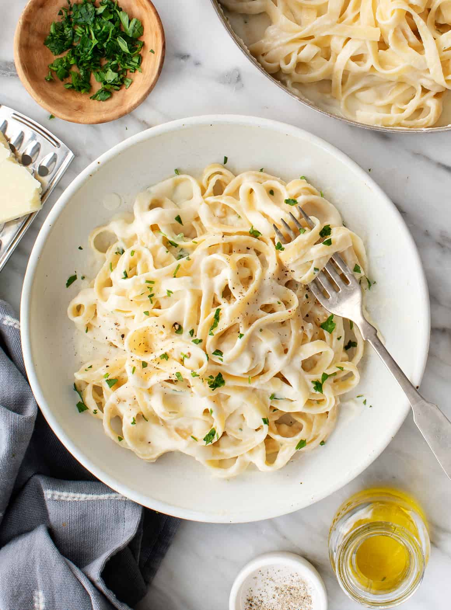

Fettuccine Alfredo

Description
I created this fettuccine Alfredo by modifying my mother's recipe. I get nothing but rave reviews when I make this dish. My boyfriend is a fettuccine Alfredo connoisseur, and he scrapes the pan every time. I must warn you, this recipe is not for the health-conscious!
Ingredients
- Pasta: Of course, you’ll need fettuccine pasta
- Butter: This Alfredo sauce starts with two sticks of butter
- Cream: The rich sauce calls for almost a cup of heavy cream
- Seasonings: The fettuccine Alfredo is simply seasoned with salt, pepper, and garlic salt
- Cheese: You’ll need Romano and Parmesan cheeses
Steps
- Cook the pasta.
- Melt the butter and cream together on the stove, season, and stir in the cheese.
- Toss the pasta in the cheese sauce.
Home